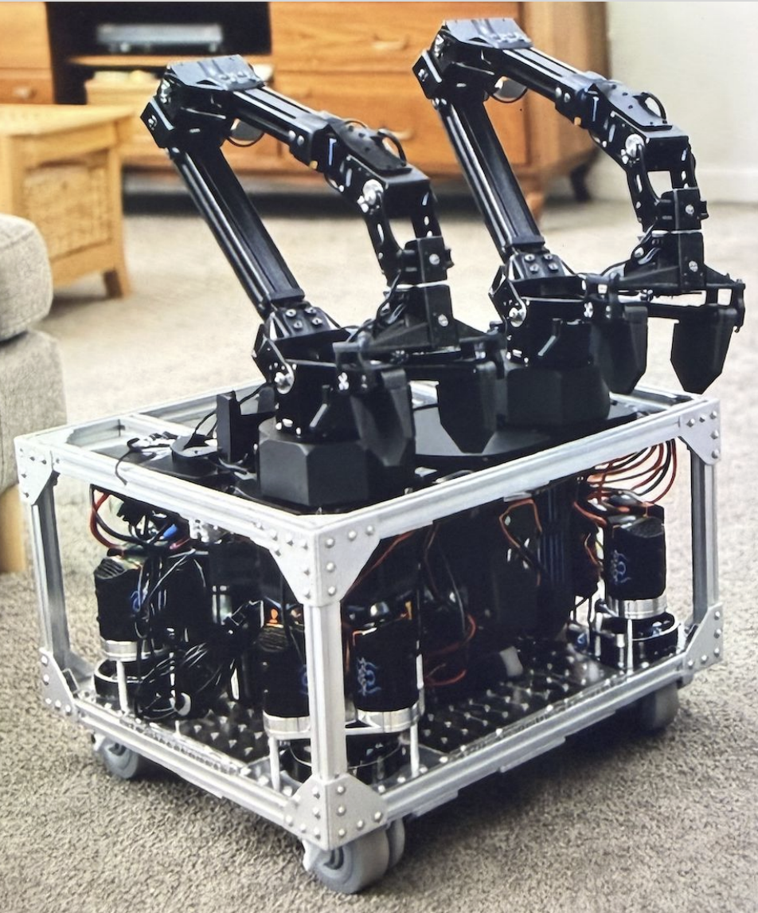
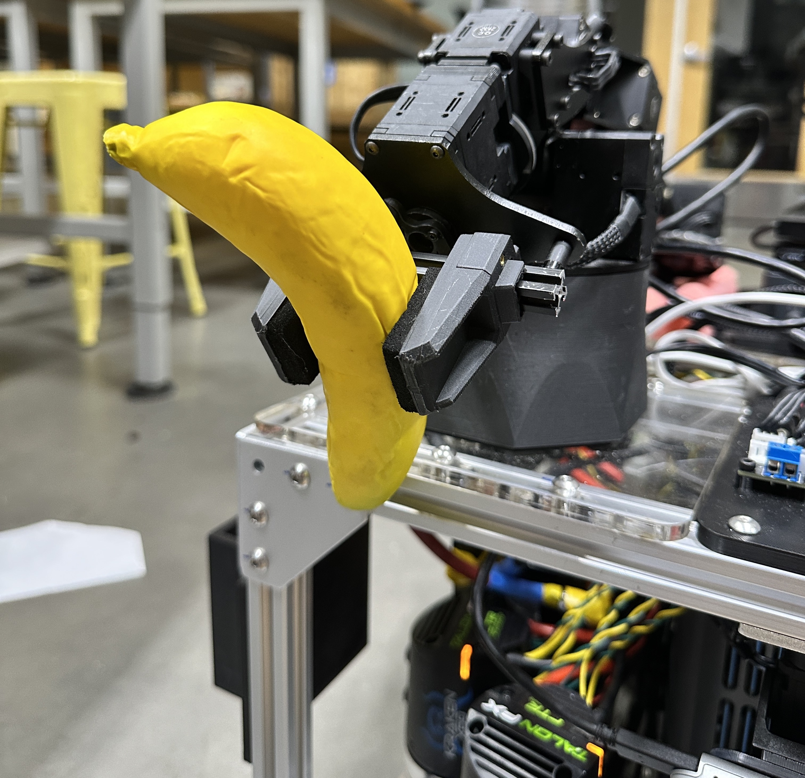
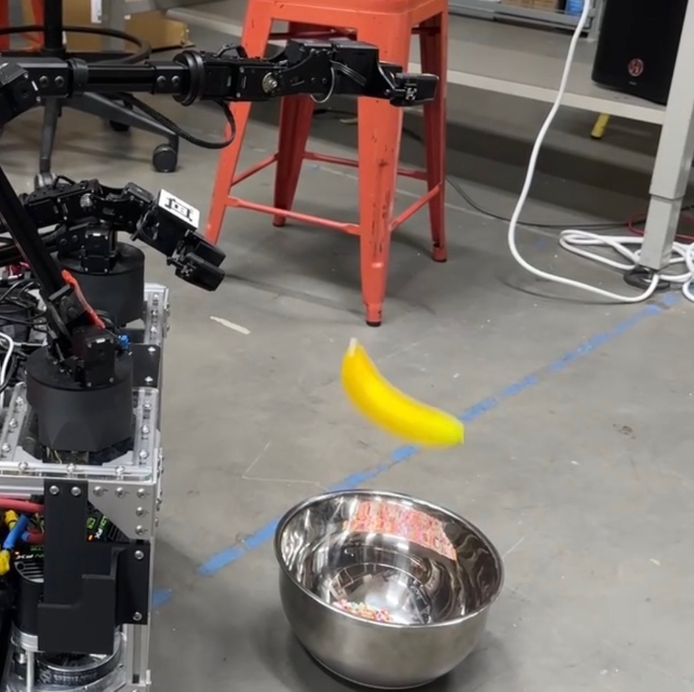
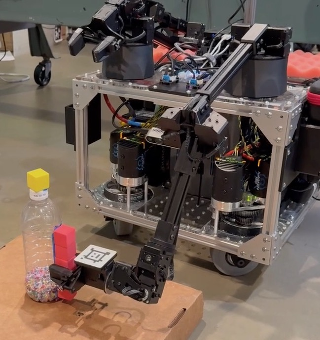
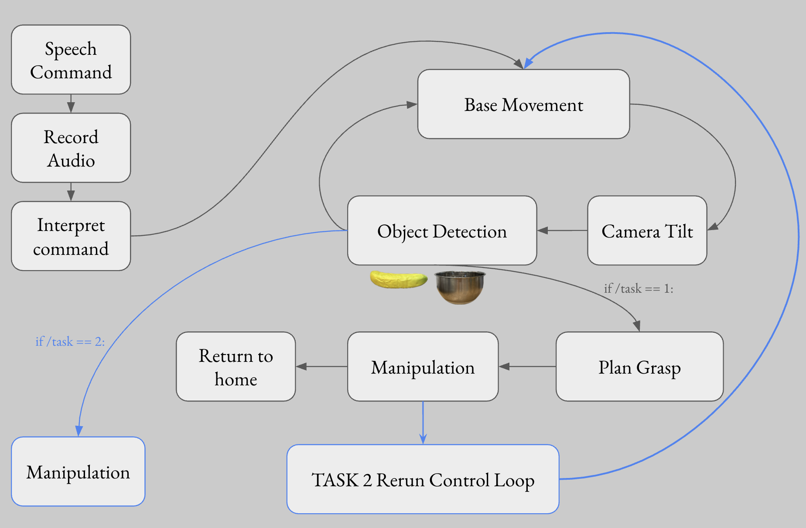
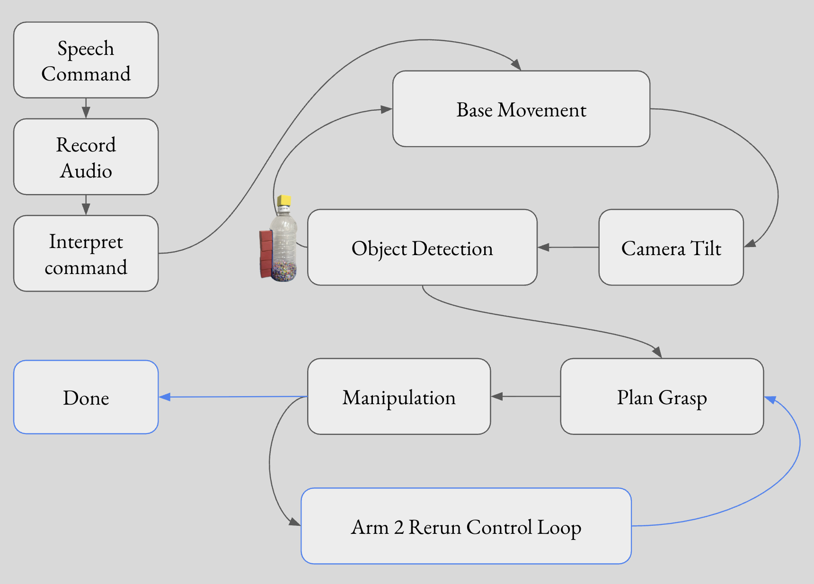
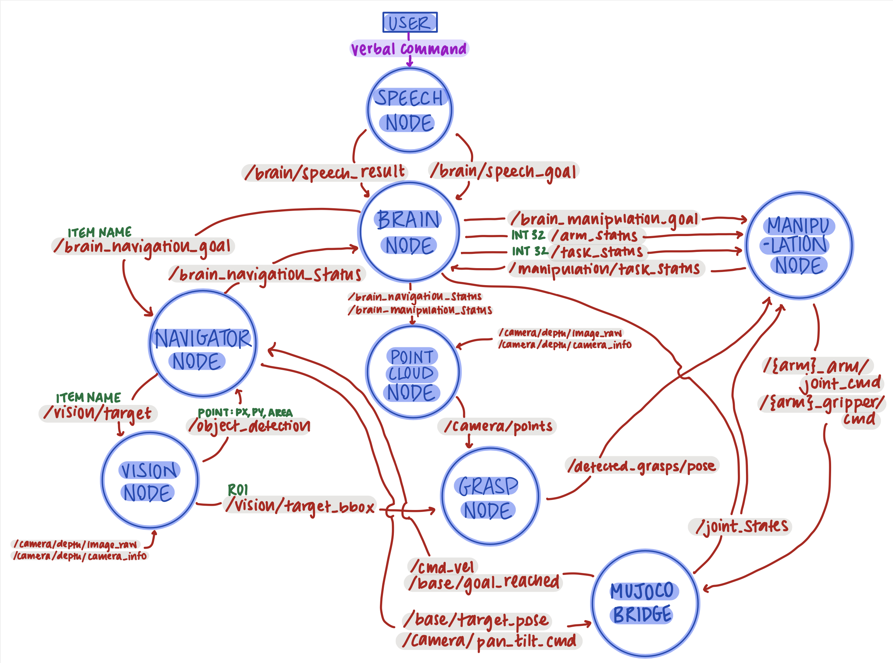
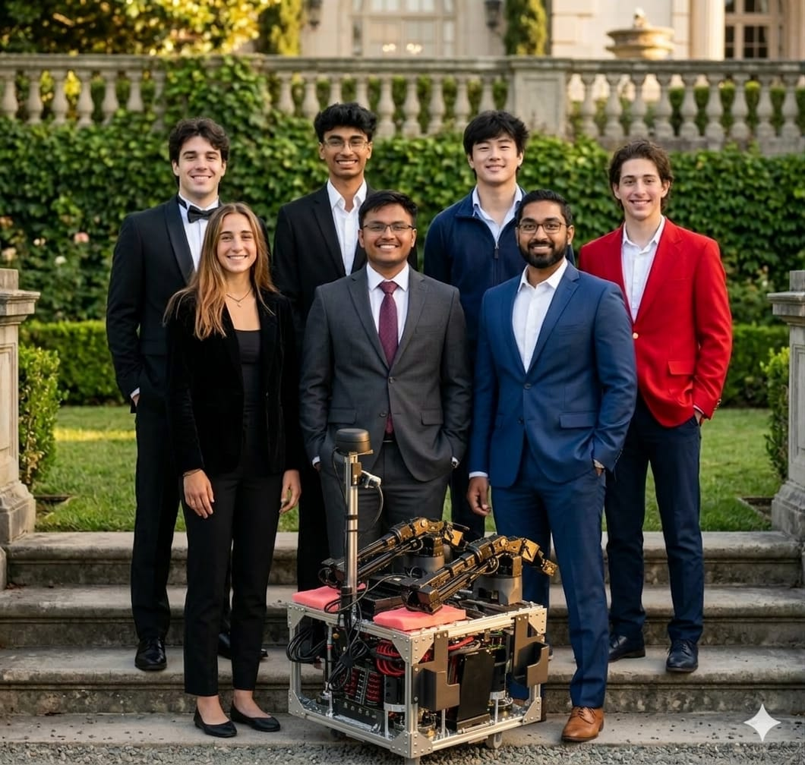
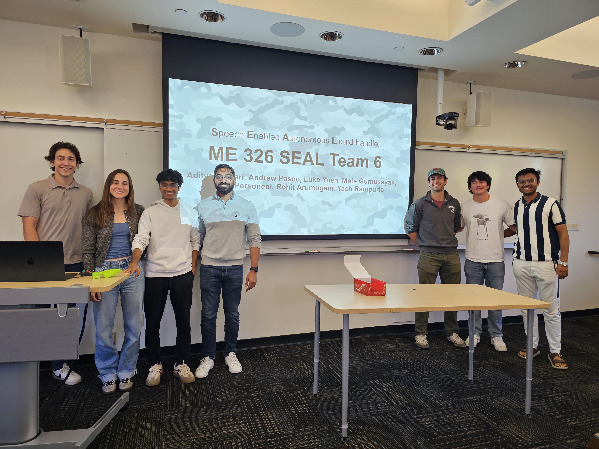

Speech Enabled Autonomous Liquid-handler
Meet S.E.A.L., a voice-commanded mobile robot that listens, looks, and acts. Built on the bimanual TidyBot++ platform, S.E.A.L. responds to natural language commands to find objects in a classroom environment, navigate to them, and manipulate them with its grippers.
What S.E.A.L. Can Do:

Task 1 required the robot to locate a verbally-specified object (banana), navigate toward it using visual servoing, compute a top-down grasp pose from the object's bounding box and point cloud, grab the object, lift it to a stowed sleep pose, and navigate back to the start position.
Key Steps:

Task 2 extended Task 1 with a navigation and deposit sequence. After retrieving the object (banana), the robot rotates to locate a verbally specified destination (bowl), visually servos toward it, stops at distance, extends the arm from the stowed pose to a forward position, and opens the gripper to drop the banana in.
Extra Steps After Task 1:

Task 2.5 generalized Task 2 to a collaborative endpoint. After locating and retrieving the banana, the robot locates a person, navigates toward them, and performs a handoff.
Task 3 required the robot to navigate to a verbally specified bottle using visual servoing, then use bimanual manipulation to uncap and pour the bottle.
Bimanual Manipulation Sequence:

Task 2.99 successfully completed the first part of Task 3. Using speech request, TidyBot grasped the bottle using a side grasp pose and brought it into stow pose.
Manipulation Subteam Lead:
System Integration:
The TidyBot2 software stack runs on ROS 2 Humble (Ubuntu 22.04) with MuJoCo + RViz as the simulation backend. The system follows an architecture centered on a Brain Node that acts as the orchestrator, communicating with specialized subsystem nodes through published and subscribed topics.
Key Nodes:
Modular Design:
The architecture was designed to be modular, allowing the same code to serve all three tasks without modification.



Room for Improvement:
Future Applications:

